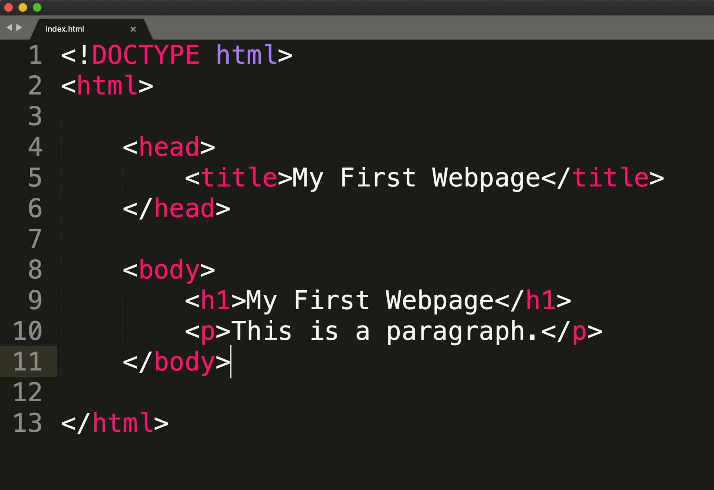
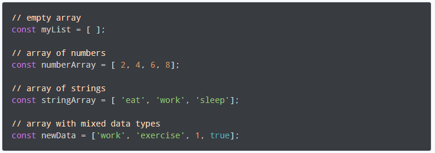
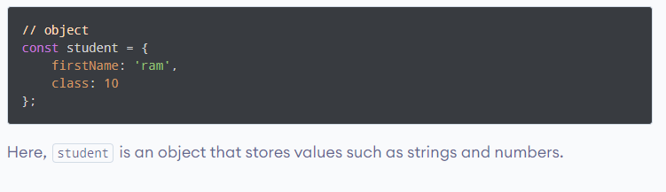
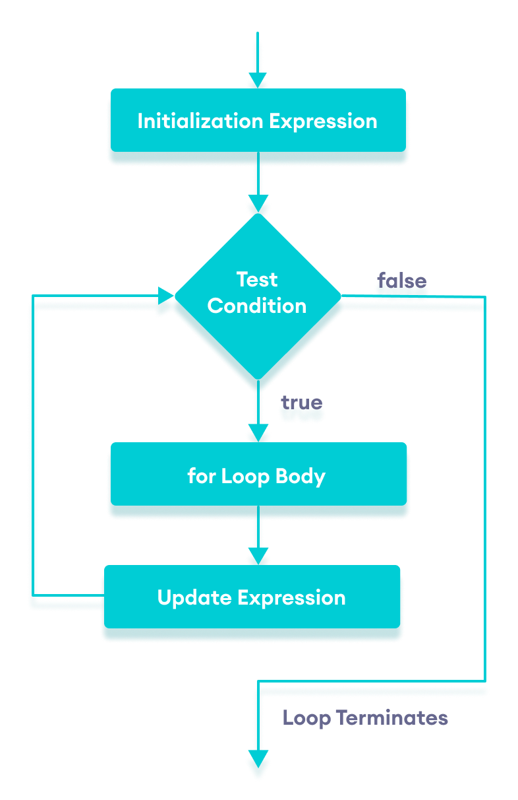
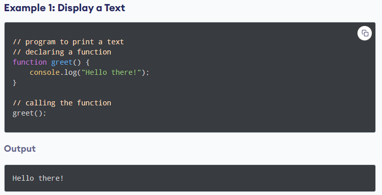
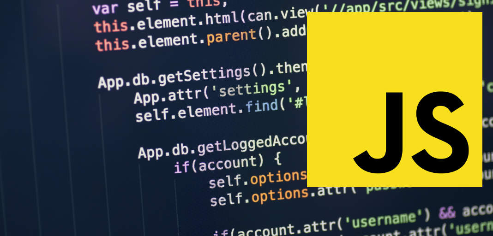

JavaScript and its relationship to HTML and CSS
HTML, CSS, and JavaScript are all part of the same web development eco-system and need to work together to maximize the potential of the modern web.
HTML stands for Hypertext Markup Language is used to describe its content and layout a basic rough structure of a website. HTML is like the frame and content of a house.

CSS - Cascading Stylesheets is a styling language that is used to shape and style website content in terms of colors,
typography, spacing, borders, and more. CSS is the paint and the rounded edges of a house that makes visually appealing
and comfortable to live in.

JavaScript is a dynamic programming language that allows you to make websites interactive, and reactive. JavaScript is
the electricity and water supply that makes a modern home a modern home. JavaScrip is what makes the elements of a website respond to user input.


Control flow and loops, arrays and objects
In programming, loops are used to repeat a block of code.
For example, if you want to show a message 100 times, then you can use a loop. It's just a simple example; you can
achieve much more with loops.

An array is an object that can store multiple values at once. Here are examples of various arrays:

Here is an example of a JavaScript object:



Functions and why they are useful
A function is a block of code that performs a specific task. Dividing a complex problem into smaller chunks makes your
program easy to understand and reusable. JavaScript also has a huge number of inbuilt functions. For example,
Math.sqrt() is a function to calculate the square root of a number.You can reuse code: Define the code once, and use it
many times.You can use the same code many times
with different arguments, to produce different results.



The DOM and DevTools
The Document Object Model (DOM) is a programming interface for web documents. It represents the page so that programs
can change the document structure, style, and content. The DOM represents the document as nodes and objects; that way,
programming languages can interact with the page.
A web page is a document that can be either displayed in the browser window or as the HTML source. In both cases, it is
the same document but the Document Object Model (DOM) representation allows it to be manipulated. As an object-oriented
representation of the web page, it can be modified with a scripting language such as JavaScript.
Chrome DevTools is a set of web developer tools built directly into the Google Chrome browser. DevTools can help you
edit pages on-the-fly and diagnose problems quickly, which ultimately helps you build better websites, faster.